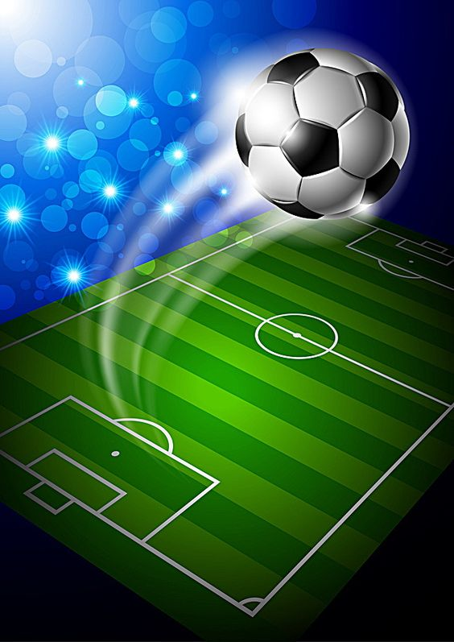
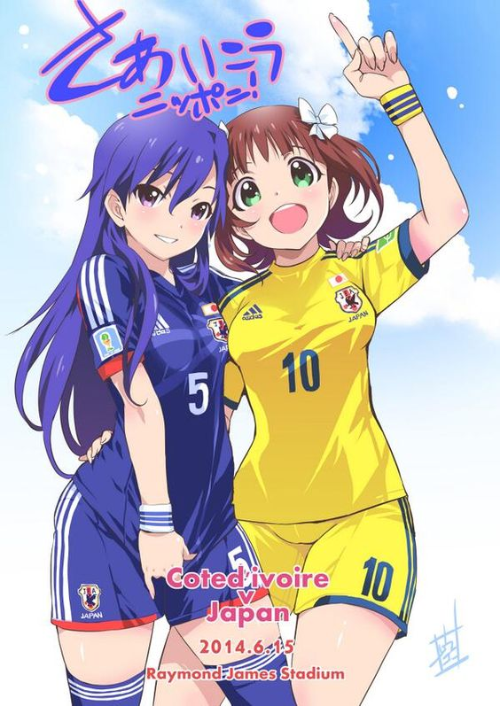
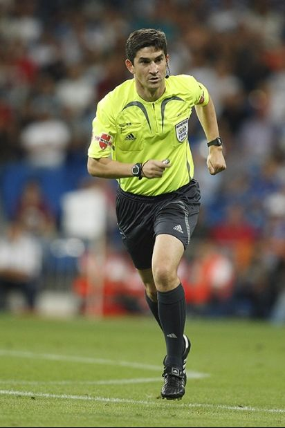
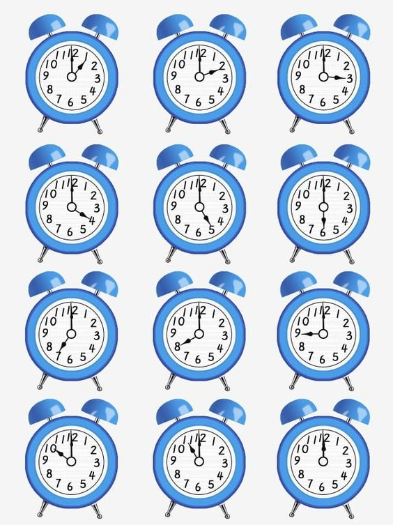
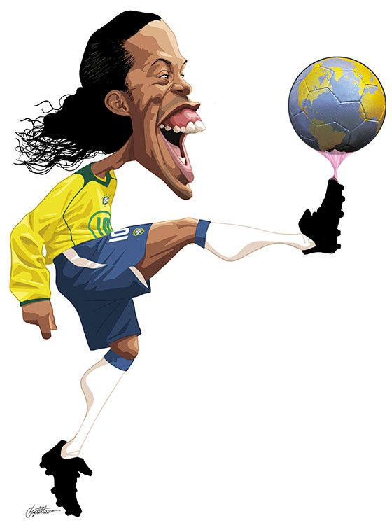
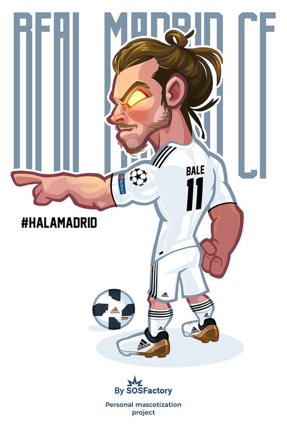
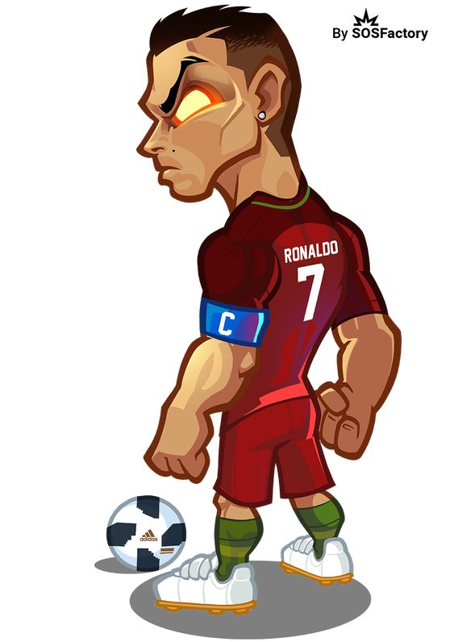

"Odio perder y eso te da una determinación extra para trabajar más duro"
Edson Arantes Do Nascimento (Pelé)
"Odio perder y eso te da una determinación extra para trabajar más duro"
Edson Arantes Do Nascimento (Pelé)
Es un deporte que se realiza entre dos quipos de once jugadores cada uno y un árbitro con la capacidad de imponer justicia imparcial. Se juega con una pelota que se debe desplazar a través del campo con cualquier parte del cuerpo que no sean los brazos. El objetivo es introducirla dentro del arco contrario, que se denomina un gol. Su duración es de 90 min, el equipo ganador es el que logro más goles.
• Según la FIFA, la forma más antigua del juego de la que hay evidencia científica data de una época alrededor de los siglos II ó III a.C. en China Su juego se llamaba tsu chu (tsu significa "dar patadas" y chu denota una bola hecha de cuero relleno). Incluso los emperadores chinos tomaron parte del juego.
• Además, el juego romOtros juegos de pelota antiguos incluyen el kemari en Japón, el juego romano de Harpastum, los griegos con el episkuros y algunos probablemente serían tanto para jugar con las manos como con los pies.
La historia moderna del fútbol abarca 100 años de existencia. Comenzó en el año 1863, cuando en Inglaterra se separaron los caminos del "rugby- football" y del "association football" y se fundó la Asociación de Fútbol más antigua del mundo: la "Football Association". El 26 de Octubre de 1863, día de la fundación de The Football Association, es considerado por muchos, como el día del nacimiento del fútbol moderno.
1. EL CAMPO: con medidas de entre 90 120 metros de largo, por no menos de 45 y no más de 90 metros de ancho.

2. EL BALÓN: El balón deberá contar con un perímetro de entre 68 y 70 cm, y con un diámetro de entre 21,65 y 22,29 cm.

3. NUMERO DE JUGADORES: Se practica entre dos equipos con 11 jugadores de campo cada uno. Si alguno de los dos equipos tiene menos de 7 jugadores el partido no se puede jugar. En la competencia oficial cada escuadra tiene derecho a tres cambios por partido.

4. EL ARBITRO CENTRAL: Es la máxima autoridad en la cancha, cronometra el tiempo, es el único que puede expulsar a cualquier persona del campo, marca las infracciones, puede parar el juego, reanudarlo, sacar tarjetas.

5. DURACIÓN DEL PARTIDO: 2 tiempos de 45 minutos, con un descanso de 15 min entre cada tiempo, sin embargo, el árbitro puede añadir tiempo de compensación cuando el juego se ha detenido por lesiones o algún otro incidente.

6. GOL ANOTADO: Con el balón en juego se declara gol anotado cuando el balón pasa por completo la línea de gol de las porterías.

7. TIROS LIBRES (DIRECTOS E INDIRECTOS): En los directos con un solo contacto se puede marcar gol. En cambio, en el indirecto se requiere de mínimo dos toques previos al gol y el árbitro lo otorga con una mano levantada.

8. PENALTI: Se marcará penalti cuando se comete una falta dentro del área del equipo defensor y todos los jugadores menos el portero y el cobrador deben estar fuera del área grande de ejecución.


La cancha, campo o terreno de juego es el rectángulo de césped natural o artificial sobre el cual se desarrollan los partidos de fútbol.
*Según la FIFA, la medida mínima que puede tener un campo de juego es 45m x 90m, mientras que la máxima es 90m x 120m. Por su parte, para partidos oficiales o internacionales de competencias FIFA, se establece un mínimo de 64m x 100m y un máximo de 75m x 110m.
*El área está delimitada por dos líneas perpendiculares a la línea de meta, a 5.5 m de la parte interior de cada poste.
*Dichas líneas se adentran 5.5 m en el terreno de juego y se unen con una línea paralela a la línea de meta.
*Por su parte, los arcos se colocan en el centro de cada línea de meta: los postes y el travesaño deben ser de madera, metal u otro material aprobado, deben tener forma cuadrada, rectangular, redonda o elíptica y no deberán constituir ningún peligro para los jugadores.
*La distancia entre los postes será de 7.32 m y la distancia del borde inferior del travesaño al suelo será de 2.44 m.
¡ONE PIECE!